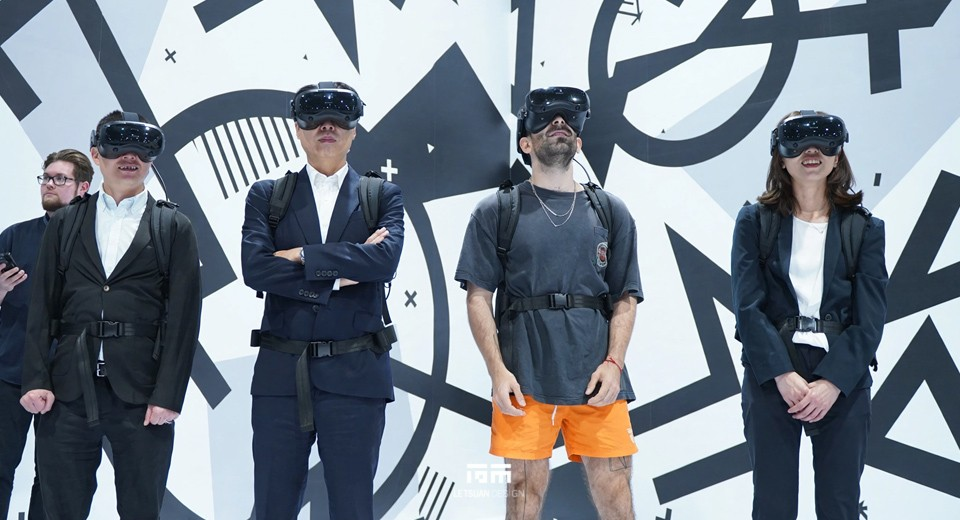
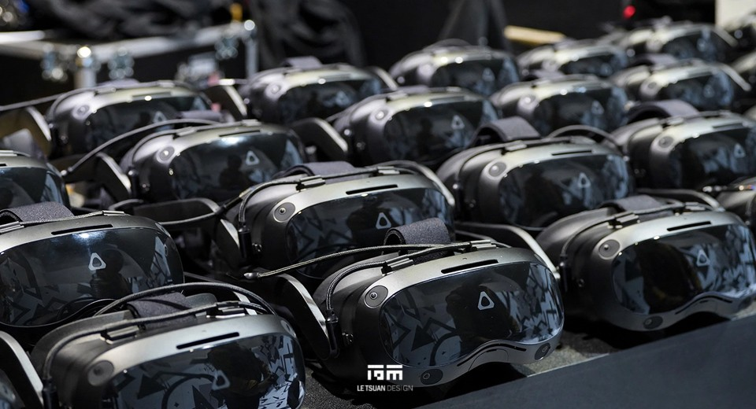
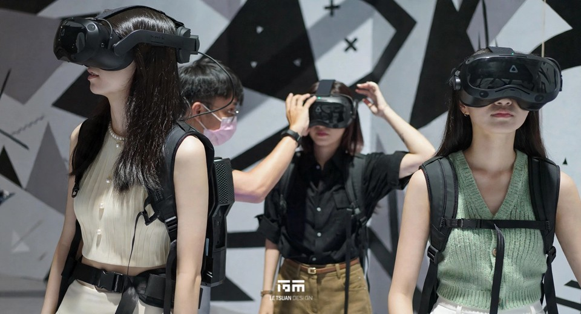
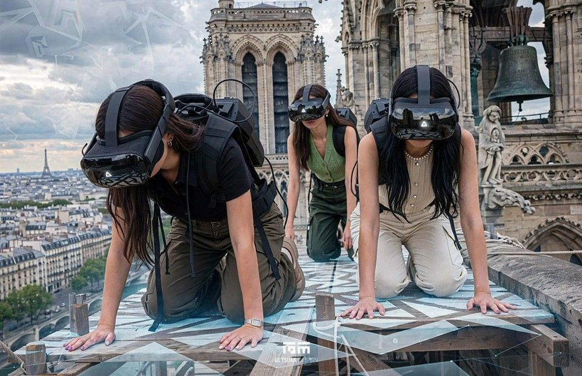
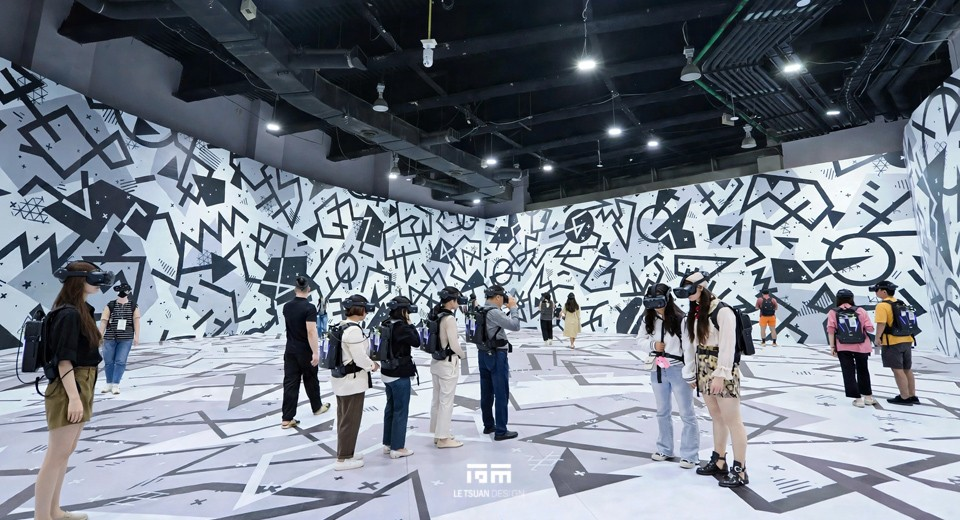
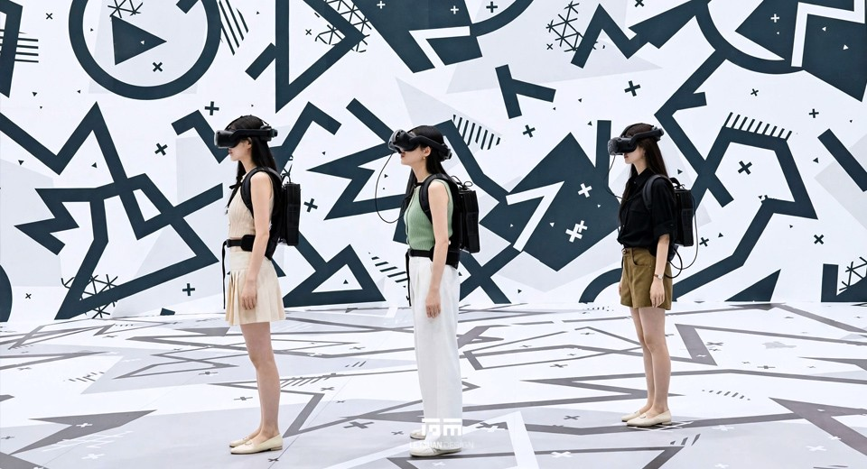
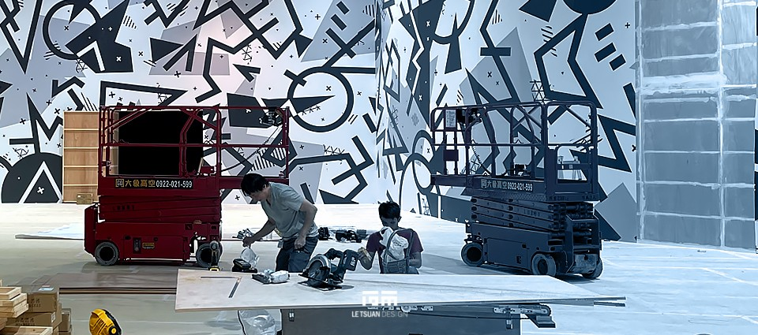
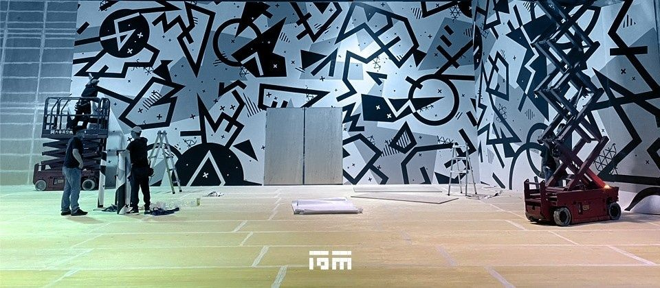

Eternal Notre-Dame International Debut of the VR Immersive Exhibition in Taiwan
CLIENT
HTC
LOCATION
Kaohsiung, Taiwan
YEAR
2023-2024
AREA
720.64㎡
CATEGORY
Exhibition Design, Installation Art, Interactive Multimedia, Construction
The Numbers Behind Twelve Days
Working to the specifications provided by the French technical team, we were responsible for exhibition spatial planning, construction drawing production, and wall-graphic print finishing, while also serving as the construction contractor handling all on-site engineering requirements.
12 days from site handover to completion. 720.64 square meters of total exhibition area. 500 meters of curved-facade printing. Working heights of 6 and 10 meters for walls and fixtures. Over 100 VR devices running simultaneously. A permitted light-level variance of just 5 percent.
Those six numbers frame the real question behind Eternal Notre-Dame: how do you rebuild the weight of a 69-meter Gothic cathedral inside a public venue where you're not allowed to drill a single hole?
What the Exhibition Is
Following the 2019 fire at Notre-Dame de Paris, digital technology stepped in. Virtual reality now lets visitors walk into the cathedral and experience its splendor firsthand while restoration work continues and the public cannot visit in person. Eternal Notre-Dame is a freely explorable VR journey: visitors create their own avatar, encounter other explorers, and view up close the Portal of the Last Judgment, the altar, the vaults, the rose windows, and the great organ. The 45-minute immersive experience closes with an elevator ride up the 69-meter bell tower, immersing visitors in the resonance of the bells before they step outside to look out over the Paris that Victor Hugo once wrote about.
The project was developed through a partnership between Orange, the Diocese of Paris, and the institution overseeing the cathedral's restoration, and produced by Excurio together with HTC VIVE and VIVE Arts. It premiered in Paris in January 2022 before making its Taiwan debut at the National Science and Technology Museum in Kaohsiung, the first stop of its Asia tour.
This exhibition's nature is unusual: visitors physically walk through the space while wearing VR equipment, so every basic engineering condition on site, network, spatial positioning, flooring, walls, lighting, had to be brought into line with the specifications set by the international technical team, item by item. Any single miss could cause the VR system's positioning to fail and break the experience. Working to the French technical team's specifications, we converted the venue's existing space into an environment that met the operational requirements of the VR system.
Walls That Could Not Be Drilled
The exhibition hall walls reach 6 meters, and the original building structure's regulations prohibited drilling or fastening. On-site space was also limited, with no room reserved for a construction corridor, so work had to happen as close to the walls as possible. We adopted a non-destructive freestanding and support-based construction method to complete the light-blocking, partition, and equipment-support structures, finishing the spatial division without damaging the original building. When the venue carried out its on-site inspection afterward, the walls and structural surfaces showed no drilling or fastening marks at all. This method can be extended to other historic venues or public buildings where construction is otherwise prohibited.
Ten Meters Up, With Fireproofing That Couldn't Be Touched
Lighting fixtures had to go on steel structural beams 10 meters up, beams that could not be fastened into and whose surfaces were already finished with fireproof foam that could not be damaged. We suspended the fixtures rather than locking them down, a method that damaged neither the steel structure nor the fireproofing material, balancing high-altitude work safety with structural protection. Afterward we confirmed the steel structure and fireproof foam surfaces showed no damage.
Five Hundred Meters, No Seams Allowed
The venue's surrounding curved facade runs about 500 meters in total length and 600 centimeters in height. We produced and finished the print graphics based on image material supplied by the French side and carried out the on-site installation. Because of the curved geometry and the extreme format length, both the graphic production and the on-site installation had to be precisely aligned, especially where the ends met. After completion, we compared image continuity section by section and found no visible seams or misalignment at the joints.
A Five Percent Margin That Decided Whether the VR System Worked at All
VR headsets and spatial sensors are extremely sensitive to ambient light. Across the entire 720.64-square-meter venue, lighting had to remain even, with brightness variance held under 5 percent, or the VR headsets' spatial-recognition precision would suffer. We still had to provide enough light for visitors to store belongings and put on equipment before entering, so the work meant balancing dark-field conditions against circulation safety. After completion, we measured the entire venue with a light meter and confirmed the values stayed within range.
A Fire Door That Couldn't Confuse the Sensors
Partition walls required swing doors leading directly to the fire escape route, but if the door hardware produced reflections or signal interference, it would throw off the VR system's positioning. We found a solution compatible with both requirements, and after completion, we inspected the evacuation route together with the fire department and confirmed no signal interference from the door hardware during VR system testing.
Over 100 Devices, No Tripped Breakers
The exhibition used a wearable format combining a head-mounted display with a backpack computer, with a total device count exceeding 100 sets requiring simultaneous rotational charging. We calculated the charging power required for each set, summed it into a total electrical load, and planned circuits and outlet configuration accordingly. Observing electrical conditions across the venue during peak periods afterward, no breaker tripped.
A Shared Elevator and a Typhoon, Still Twelve Days
Material and equipment transport had to share an elevator with other exhibition spaces, with no independent scheduling possible. Construction also coincided with Typhoon Khanun, which prompted a work-and-school suspension in Kaohsiung and briefly slowed progress. We coordinated a transport schedule with the venue in advance, and after the typhoon passed, worked with the venue's facilities office on an accelerated schedule, completing all pre-opening preparation within the originally scheduled construction period. From site handover to completion, the entire project took just 12 days.
Building for an Earthquake That Might Not Come
Taiwan sits in a seismic zone, so the non-fixed freestanding structures, support frames, and suspended lighting fixtures within the venue had to account for stability and safety factors during an earthquake at both the design and construction stages. All relevant structural designs were evaluated and planned according to the seismic safety-factor requirements of building codes.
Coordination
During construction, we coordinated and confirmed matters on site with multiple parties: VR system positioning and environmental-condition specifications with the French technical team, Excurio and HTC VIVE; elevator scheduling, construction-corridor constraints, and structural-protection matters with the venue's facilities office; and the swing doors and evacuation-route configuration with the fire department. Every engineering item was completed in compliance with the requirements of all these regulatory bodies at once. The exhibition met the international technical team's specification requirements and opened successfully in Kaohsiung as the first stop of its Asia tour.
RELATED PROJECTS







